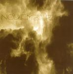

Home Artist links

November - November
| Artist: | November |
| Title: | November |
| Label: | self produced |
| Length(s): | 26 minutes |
| Year(s) of release: | 2005 |
| Month of review: | [01/2006] |
Line up
Jos Duijst - vocals
Martijn Hoekstra - piano, hammond
Roel van Gils - bass, chapman stick, upright bass
Remco Bouwens - drums, percussion
Stef Köhler - guitar, sitar, sarod
Tracks
| 1) | Afterglow | 4.44
|
| 2) | Slipping Through Our Hands | 6.12
|
| 3) | Star Of The Fields | 6.22
|
| 4) | At Midnight | 4.26
|
| 5) | Caravan | 5.04
|
Summary
This is a Dutch band from Amsterdam, playing as they call it Autumn Music.
This is their first demo release.
The music
Afterglow opens with piano and organ followed by the Radioheadesque vocal melodies
sung by Duijst (but somewhat less vague). The music is strongly romantic, but not
in any sugary way, more in a dark fashion. The vocal 'harmonies' remind
somewhat of Echolyn. This is not straightforward prog, but more a mix of modern
day pop and prog. It seems to me that with the advent of bands like Radiohead,
Mars Volta, Muse and the rise of Porcupine Tree, more and more prog elements
creep into the quality rock and pop of the world (or is it the other way around).
Most striking on this song are the variety, the good vocal melody and the amount
of heavy organ work. There is a melancholy overlying it all, so the name Autumn
is not badly chosen.
On Slipping Through Our Hands the singer alternates between low voiced and higher
pitched vocal melodies. For the remainder, the song is in a style similar
to that of the previous track.
Star Of The Fields is a more ballad like track. The plaintive vocal melody sounds
familiar, reminding me of a song by Dilemma. The chorus is beautiful, very sad too.
The band continues the somber streak of the first songs, but it is all more laid
back now. Only in the build up to the chorus and the chorus itself are a bit more
potent, that is until the noise guitar sets in for the bridge. Excellent.
Good vocal melodies continue to come our way on At Midnight.
There is maybe a sameness to them, as there is to the vocals, but
I am not tired of them yet! In fact, we can also recognize is as the
bands having some identity of their own. The guitar is quite
psychedelic here, in the middle part and epic.
Caravan combines tasteful piano and guitar, until the drums come in and set
a plodding pace. The bass gets its place in the spotlight too.
The guitar gets quite rough and noisy here, when the arabic styled melody
comes in (played by the piano). The vocals are none too steady here,
as the band works itself into a frenzy and a climax. I am strongly reminded
of Neurosis here.
Conclusion
November makes Autumn Music. This means a somber brand of progressive
pop with some hard leanings in places. In the vocals I am reminded
of Dilemma and Egdon Heath, while the music itself is more
'modern' touching on Radiohead and Porcupine Tree with even a bit
of everything thrown in, singer song writer, psychedelica, metal. But always
the music is kept melodic and appealing.
A very good start for this young band and I hope to be hearing more of them.
© Jurriaan Hage